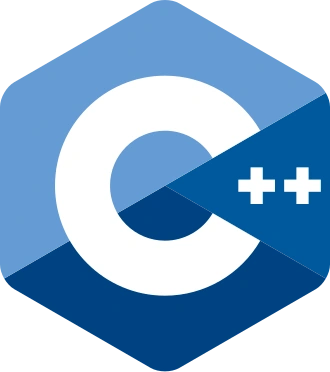
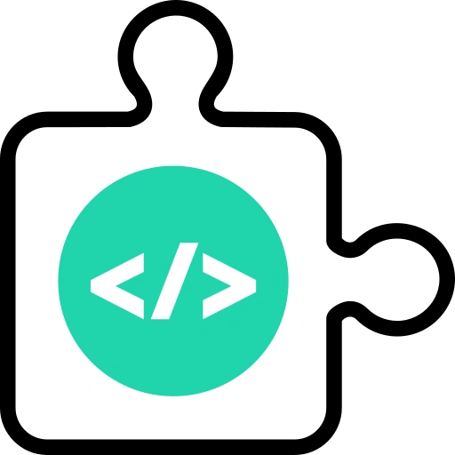
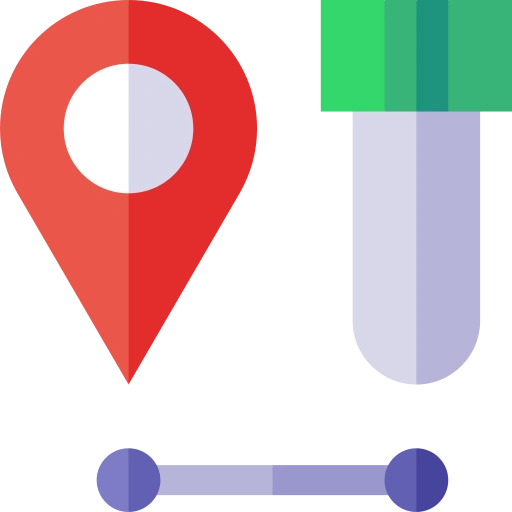

Explore My
Skills
Frontend Development
Experienced
HTML
90%Experienced
CSS
90%Experienced
Flutter
85%Intermediate
Bootstrap
75%
Basic
C++
60%Basic
Python
60%Basic
Material UI
60%Backend Development

Experienced
Git
90%Intermediate
JavaScript
80%Intermediate
PHP
75%Intermediate
jQuery
75%Intermediate
MySQL
75%
Basic
Node JS
60%Basic
Express JS
60%Quality Assurance

Experienced
Unit
Testing
85%

Intermediate
E2E
Testing
75%
Intermediate
Performance
Testing
75%
Learn About My